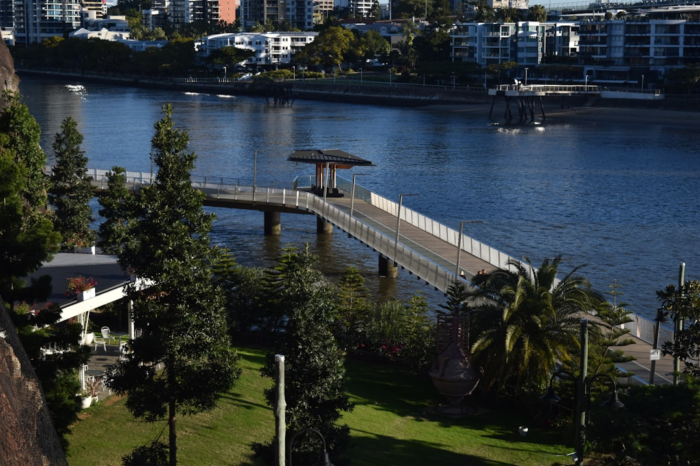

Before comparing wall materials or quotes, document the full ground-level change, wall length, water paths, nearby structures, boundary position and site access. The source guide says height, surcharge loading and distance from another wall or building need to be assessed together when approval questions arise. A stronger brief also includes wide photos, rough measurements, signs of movement or wet areas, and a written scope covering drainage, spoil removal and restoration.
For Brisbane owners planning retaining walls brisbane work, the useful first step is to map retained height, drainage paths, nearby loads and access before choosing concrete sleepers, timber, block or stone.
Retaining Walls Brisbane Explained
Retaining Walls Brisbane sets out the job as a site and drainage exercise before it becomes a material comparison. That approach is useful because the same wall type can suit one block and fail to answer the real problem on another. Start with the full change in ground level, the maximum retained height, total wall length, visible runoff, nearby driveways or buildings, the boundary position and the space available for excavation or spoil removal.
Photographs matter when they show the whole wall, both ends, the ground above and below, and any cracking, leaning, decay, erosion or wet patches. Include pools, fences, stairs, side passages and delivery turns if they affect access. On a steep inner suburb block or a foothill site, access can change what machinery reaches the work zone and whether a system that looks straightforward becomes awkward to build.
- Measure the wall length and maximum retained height.
- Mark downpipes, pits, runoff paths and consistently damp areas.
- Show nearby structures and neighbouring ground that may add load.
Put drainage into the first scope
The source guide treats drainage as part of the structural discussion because trapped water adds pressure and can move fine soil through gaps. It describes a typical arrangement as free-draining aggregate, suitable filter fabric and a subsoil collection line, with the outlet depending on the property. That means owners should ask where collected water will discharge and what existing stormwater arrangements need checking before the trench is closed.
Drainage questions are just as important on replacements as on new work. If an older wall is leaning, bulging, undermined or stained, ask whether the issue points to water, loading or both. A cause-led brief makes quote comparisons clearer than jumping straight to a preferred finish. For a narrower look at installer selection, this related guide on retaining wall builders brisbane focuses on what to ask when comparing contractors.
Match the wall system to the ground condition
The source page ties each wall type to a site problem, not a style preference. Concrete sleeper systems are presented for replacements, boundaries and cut-and-fill work where post embedment, access and drainage are assessed together. Treated timber systems are positioned for lower garden walls and terraces where member selection, moisture exposure, drainage and maintenance need to stay explicit in the brief. Reinforced block systems are framed for engineered loads, tighter footprints and finished residential walls that need coordinated footing and drainage details.
Natural stone and gabion options also depend on the site. Sandstone and boulder walls are described as gravity and battered solutions where bearing, block geometry, machinery access and runoff management suit the ground. Gabion walls are linked to terraces and erosion settings with sound foundation preparation, filter separation and basket specification. The practical question is which system answers the retained load, water movement and access limits with the least uncertainty once excavation starts.
Approval checks and qualified roles
The source guide links out to council and QBCC information where property-specific checks matter, and it does not present approvals as a one-size-fits-all answer. It says Brisbane City Council describes limited circumstances in which a retaining wall may not need building approval, but height, surcharge loading and distance from another wall or building need to be assessed together. Easements, overlays, protected vegetation, boundaries and nearby services can introduce separate requirements.
That is why an early quote should not be treated as the final pathway for the job. Larger, loaded or unusual walls may need engineering and building approval, and the source page states that regulated work and design are carried out by appropriately qualified professionals. It also notes that the Queensland Building and Construction Commission provides a public search for checking licence details presented for regulated work. If the site has nearby structures, unusual loading or uncertain boundaries, ask what design and approval steps still need confirmation.
What to send when requesting quotes
A useful enquiry separates confirmed work from provisional items. The source guidance says to name the wall system, finish and design responsibility, then describe excavation, spoil removal, drainage, outlet treatment, temporary support, fence interfaces, access protection and restoration. If one of those items is not yet known, say so plainly. That gives contractors room to identify what still depends on site inspection, engineering input or council checks.
This approach suits both owners planning a new wall and owners deciding whether repair or replacement is more realistic. For an existing structure, add when movement first appeared and whether cracking, decay, erosion or staining changed after rain or recent changes above the wall. Those details help distinguish a simple material preference from the underlying site issue. A tighter brief usually produces more comparable responses because each contractor is pricing against the same scope rather than filling gaps with assumptions.
- Measure the retained ground. Record wall length, maximum retained height and the wider change in ground level before asking for material comparisons.
- Map water and nearby loads. Photograph runoff, wet patches, downpipes, driveways, buildings, pools, fences and neighbouring ground that may affect drainage or loading.
- Check the approval path. Ask whether height, loads, nearby structures or boundary conditions raise engineering or building approval questions for this site.
- Send a written scope. List wall system, finish, design responsibility, excavation, spoil, drainage, outlet treatment, temporary support and restoration so quotes address the same brief.
| Wall type | Where the source guide places it | Detail to clarify early |
|---|---|---|
| Concrete sleeper | Replacements, boundaries and cut-and-fill projects | Post embedment, access and drainage |
| Timber sleeper | Lower garden walls and terraces | Moisture exposure, drainage and maintenance |
| Reinforced block | Engineered loads and tighter footprints | Footing and drainage coordination |
| Sandstone, boulder or gabion | Gravity, battered or erosion-oriented settings | Bearing, runoff and foundation preparation |
Common questions
Does every retaining wall job in Brisbane need building approval? No blanket answer is given on the source page. It says Brisbane City Council describes limited circumstances in which a wall may not need building approval, and that height, surcharge loading and distance from another wall or building need to be assessed together.
What makes the first enquiry more useful? The source guide asks for wide photos, approximate measurements, signs of movement or wet areas, access notes and nearby structures. It also recommends a written scope covering the wall system, drainage, spoil removal, outlet treatment and restoration.
When should an owner ask harder questions about repair versus replacement? The source material frames repairs and replacement as cause-led work for walls that are leaning, bulging, cracked, decayed or undermined. Ask what is driving the movement, because drainage, loading and site conditions affect whether a repair scope is realistic.
This guide covers site records, drainage questions, wall-system trade-offs, approval checks and quote inputs for Brisbane retaining projects.